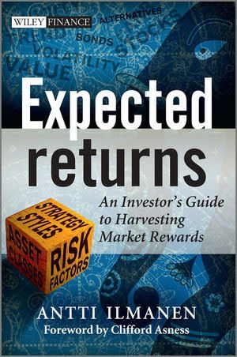

I sent this list to a friend when he asked for a few "non mathematically hardcore" finance books to read.
Here's a good list of finance books that aren't highly technical
Liar's poker: rising through the wreckage on Wall Street - Michael Lewis
Awesome book about how he got started in investment banking, talks extensively about his first few months.
Rogue trader - Nick Leeson
The first-hand account by Nick Leeson of the events that lead up to the collapse of Barings bank.
Barbarians at the Gate: The Fall of RJR Nabisco - Bryan Burrough, John Helyar
A long book, but really good, good insight into everything going on behined the scenes in a large LBO, gives insight into the Corporates, Lawyers, IBs and PE firms.
The Big Short: Inside the Doomsday Machine - Michael Lewis
Talks about 4-5 guys who bet on the housing bubble with CDOs, really enjoyed this. Good story about some guys who started with 5 figures, made some options bets to get up to 7 figures then used that to make CDO bets to get to 9 figures.
The Predators' Ball: the inside story of Drexel Burnham and the rise of the junk bond raiders - Connie Bruck
The story of Mike Milkin and Drexel Burnham, junk bonds and LBOs all the way.
When genius failed: the rise and fall of Long-Term Capital Management - Roger Lowenstein
About LTCM, a huge hedge fund that failed in 1998, had Scholes and Merton on its staff.
Confessions of a Wall Street Analyst: A True Story of Inside Information and Corruption in the Stock Market - Daniel Reingold
A great insight into the role of stock analysts before fair disclosure.
Traders, guns & money: knowns and unknowns in the dazzling world of derivatives - Jatyajit Das
A slightly more technical book, but a bunch of stories about weird and wonderful derivatives plays around the world.
Street Freak: Money and Madness at Lehman Brothers - Jared Dillian
Jared's first person account of being a trader at Lehman Brothers. Really entertaining and gave me some good insights into what kind of trading they were doing. Fairly unforgiving in assumed knowledge---unless you've read a lot about trading or have worked front-office some of the passages wont make sense.
More general books of interest
The Ascent of Money: A Financial History of the World - Niall Ferguson
A great history of the development of finance, also a TV series.
A Random Walk Down Wall Street: The Time-Tested Strategy for Successful Investing - Burton Malkiel
A quintessential investing book, quite sophisticated (talks about CAPM, etc) gave me a lot of insight into investing when I read it.

Some with a bit more mathematical complexity
Expected Returns: An Investor's Guide to Harvesting Market Rewards - Antti Ilmanen
This may be the kind of thing you're looking for after reading Malkeil. In some ways it's a modern version of A Random walk down wall street but spun into a more quant investment style. It focuses on methods for estimating expected returns and covers a wide range of asset classes and techniques. IIRC Ilmanen is a pretty successful hedge fund manager.
Irrational Exuberance - Robert Shiller
Explores behavioural finance and how securities markets are effected by the behaviour of crowds, sentiment, etc.
My Life as a Quant: Reflections on Physics and Finance - Emanuel Derman
This is an exciting read. Towards the end of the book he discusses some of his models for implied volatility surfaces, along with some equations and 3d plots, which I though was pretty cool back when I read it.
If derivatives are more your thing, rather than stock picking and portfolio management, then I highly recommend Paul Wilmott Introduces Quantitative Finance - Paul Wilmott. This book has a somewhat bad reputation in the quant space "It's childish", and the style does come across as "Learn Quantitative Finance in 24 Hours", however if you do work through it, implementing some of the Excel examples (perhaps not in Excel), it will certainly set you up for more rigorous treatments of derivatives. It's better to have some high level exposure to the financial instrument and cursory understanding of the math rather than diving head first into measure theory and stochastic differential equations!